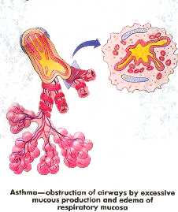
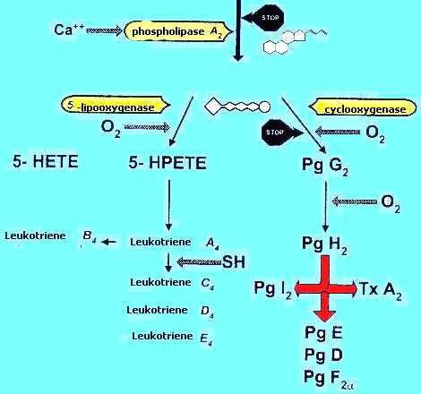

EARLY PHASE OF ANAPHYLAXIS: AUTOCOIDS OF INFLAMMATION
As indicated earlier, triggering of mast cells leads to the release of preformed (primary) and newly synthesized (secondary) mediators that are described below.
Primary mediators are contained within the mast cell granules and include
- histamine, which causes intense bronchial smooth muscle contraction, increased vascular permeability, and increased secretion by nasal, bronchial, and gastric glands; mast cells hold the “record of the organism” in histamine content per cell. In rodents substantial role in the symptoms of anaphylaxis belongs to another amine – serotonin.
- several peptide eosinophil, basophil and neutrophil chemotactic factors of anaphylaxis (ECF-A, BCF-A, NCF-A), which account for the presence of these cells in allergic reactions; and:
- granule-matrix-derived mediators, such as heparin and neutral proteases. They are tightly bound to the proteoglycan matrix of the granule and participate in the so called "late phase reactions" of type I hypersensitivity, described later.
Biogenic amines are responsible for many manifestations of anaphylaxis, including stimulation of polymodal free skin nocireceptors, causing itch and pain. It is worth to underline, that the action of histamine over H1 and H2 receptors is ambiguous and even opposite. Classic inflammation effects are mediated chiefly via H1-receptors. At the same time, in normal individuals histamine is able to elicit a long row of anti-inflammation actions via H2 receptors (inhibition of granulocyte chemotaxis and exocytosis, suppression of degranulation, decrease of lymphocyte cytotoxicity, promotion of lymphocyte immunosuppression). All these effects are cAMP mediated and serve as negative back circuit mechanism for down-regulation of inflammation. There is an opinion (A. & I. Szent-Ivanyi, 1985), that anaphylaxis can occur as a manifestation of defect in anti-inflammatory action of histamine over H2-receptors. H3 histaminic receptors exist on lymphocytes and in CNS. It is suggested, that they are essential for histamine-dependent suppression of lymphoid cell proliferation (S.L. Kotova, L.M. Berezhnaya, 1992).
Recently it has been shown that some proteases and esterases of mast cells and basophils are of exclusive significance for the course of early and late anaphylaxis.
These are chymase, tryptase and N-a - p-tocyl-arginine-methylestherase (TAME)
Tryptase is the marker enzyme of mast cells, collecting 99 % of this neutral proteolytic enzyme. 1% is located within basophils. ELISA method for determination of free blood tryptase activity gives true characteristic of mastocyte activation process. Tryptase causes lysis of C3 complement fragment with production of its decay peptide anaphylotoxin C3a which is able, together with C5a, provoke a new wave of degranulation and WBC activation. This mechanism greatly increases vasodilatation, exudation and edema formation.

The tryptase also is competent to activate kinin system and, via it, the whole cascades proteolytic multi-system of blood plasma. Basophils produce the analogue of tryptase, activating kinins.Chymase is a chymotrypsin-like enzyme from mast cells, which destroys proteoglycans, thus increasing the permeability of vascular wall and basal membranes. It stimulates also bronchial mucus production. Both tryptase and chymase destroy vasoactive intestinal polypeptide, extinguishing the most potent bronchodilator and deranging normal regulation of bronchial compliance.
TAME is an esterase from mast cells and basophils, important mediator of smooth muscle spasm and vascular permeability increase.
Now, re the secondary mediators of anaphylaxis:
Secondary mediators are not stored, but generated ex tempore. These are lipids and peptide cytokines.
Lipid autocoids are produced by a complex series of reactions in the mast cell membranes, leading to the generation of arachidonic acid from membrane phospholipids by activated phospholipase A2, phospholipase C, and diacyglycerol lipase. The complex of allergen, reagin Ig and its receptor activates the precursor of serine esterase. Serine esterase triggers the chain of events, causing the production of phosphatidyl choline. In presence of growing amounts of intracellular Ca+2, phospholipase A2 gets activated and converts phosphatidyl choline (PhCh) into lyso-PhCh and arachidonic acid.
Arachidonic acid is the parent compound from which leukotrienes and prostaglandins are derived by the 5-lipoxygenase and cyclooxygenase pathways, respectively. Each of these is considered separately.

Prostaglandin pathway starts with decay of arachidonic acid by cyclooxygenase into 2 cyclic endoperoxides –PgG2 and PgH2. These 2 are later modified by synthases into biologically active derivatives: PgD2, PgE2, PgF2a and PgI2 (prostacyclin). In plus thromboxane TxA2 is produced. The most remarkable signal of prostaglandin pathway in anaphylaxis is PgD2. This autocoid is produced only and exclusively by mast cells. Even basophils do not make it. This particular prostaglandin is proven to be very active contributor of early anaphylaxis stage, especially active as bronchspastic agent and mucus secretion stimulator. But it does not influence late phase of anaphylaxis (R.S. Shames, D. Adelman, 1997). PgF2a and TxA2 are known to be short-lived bronchial constrictors, and last one is also potent platelet-coagulation activator. PgE2 and prostacyclin, in opposite, dilate bronchi and decrease thrombocyte aggregation, diminish expression of cell adhesion molecules by endotheliocytes.Lipoxygenase pathway starts with conversion of arachidonic acid into 5-HETE (hydroperoxyeicosatetraenic acid), which gives leukotriene (Lt) A4. LtA4 with water gives LtB4, and with glutathione added – LtC4. Loosing a moiety of glutamic acid, LtC4 transfigures into LtD4. Deglycinisation of the last metabolite gives LtE4.
Leukotrienes are extremely important in the pathogenesis of type I hypersensitivity. Leukotrienes C4, D4, and E4 are the most potent vasoactive and spasmogenic agents known. Their vasoconstrictor action is so potent, that they are able to cause even spasm of coronary arteries. The cases of anaphylactic stenocardia are well known and even the unique case of anaphylactic myocardium infarction in young male with familiar mastocytosis has been described. On a molar basis, leukotrienes C4 and D4 are several thousand times more active than histamine in increasing vascular permeability and causing bronchial smooth muscle contraction. they are also remarkably potent stimulators of mucus secretion in the airways. Because of slower liberation rate, comparing to that of histamine, the mixture of LtC4D4E4 is known as “slow - reactive substance of anaphylaxis (SRS-A)”, involved not only in early, but also in late phase of anaphylaxis. LtC4 and LtD4 are potent mucus secretion stimulators. The mucus, containing these Lt produces palsy in nematode larvae, facilitating their evacuation out of the body.
Leukotriene B4, for which basophils and mast cells are the richest sources, is highly chemotactic for neutrophils, eosinophils, and monocytes.
Platelet activating factor (PAF)- 1-alkyl-2-acetylglycero-3-phosphocholine - is another secondary mediator or that causes platelet aggregation and release of histamine. In addition, it also has other potent biologic effects, such as bronchoconstriction, vasodilatation, and increased vascular permeability, all of that are independent of histamine release. Although PAF production is also initiated by the activation of phospholipase A2, it is not a product of arachidonic acid metabolism. PAF is known as strongest activator of neutrophils and platelets and chemoattractant of eosinophils. The last property makes it the major signal of late phase anaphylaxis.
Different lipid mediators of anaphylaxis are sometimes alternative in their action over the same targets. As prostaglandins (except PgD2) are, mainly, bronchodilators and leukotrienes – potent bronchoconstrictors, these autocoids may cause opposite influence over bronchial tree compliance. It is not manifested under common normal conditions, but in individuals with hereditary decreased cycloxygenase activity, which constitute quite substantial percentage of human populations, the interaction of these lipid mediators in presence of cycloxygenase blockers may cause the development of Vidal’s syndrome. This syndrome is very important in differential diagnosis of bronchial asthma, because it resembles the clinical picture of true asthma very closely, but is not related to allergic mechanisms.
In Vidal’s syndrome patients suffer from asthmatic cough and bronchial spasm after they take aspirin or any other drug, containing salicylates. Some other blockers of prostaglandin biosynthesis, like indomethacin, also are able to provoke this syndrome. Deceiving character of this disorder is caused by its misdiagnosis as bronchial asthma or “drug allergy”. As non-steroid analgesics commonly are taken by large contingents of people, Vidal’s syndrome is registered very often. M. Gershwin reported, that probably up to 20% of asthmatic patients in USA in fact have not classic atopic asthma, but suffer from this disorder. The aspirin and its analogues are common drugs in flu and cold, so doctor may misinterpret the manifestation of Vidal’s syndrome, as infectious-allergic bronchial asthma. The situation around this syndrome misdiagnosis is even more complicated, because many sweets, cakes and cold drinking, broadly used everywhere, contain food amendment called tartrazine, which acts on Vidal’s patients identically with aspirin. Tartrazine presents in lemonades, fruit caramels and droplets, dry mixtures for cake baking, mint tablets, as well as in natural blackcurrants, raspberries, some sorts of green apples. This may mislead a doctor to the diagnosis of “food allergy for sweets or fruits”. In fact, Vidal’s syndrome is of no relation to allergy. It is allergoid anaphylactoid reaction. In individuals with decreased cycloxygenase activity spontaneous production of PgE2 is low. The action of aspirins or tartrazine, especially if arachidonate store is exhausted, shifts the balance of eicosanoids to prevailing of leukotrienes, which cause bronchial spasm. For the distinguishing diagnosis of this syndrome, a doctor needs to take into account the fact, that Vidal’s patients are almost always males and check a suspicious case for the presence of chronic sinusitis and adenoids, typical for Vidal’s. The Vidal’s syndrome illustrates the thesis of great variance of bronchial asthma, which is sometimes oversimplified and interpreted as purely anaphylactic disorder. In fact, the mechanisms of asthma can broadly vary and involve different types and categories of hypersensitivity, as well as non-allergic (allergoid) disorders.
Another group of secondary anaphylaxis autocoids is presented by peptide cytokines. Mast cells produce IL-1, IL-4, IL-5, IL-6 and TNFa . IL-4 and IL-5 also are secreted by Th2 –cells. The cytokines, together with PAF, are essential for transition to late phase of anaphylaxis.
In summary, a variety of chemotactic, vasoactive, and spasmogenic compounds listed here, induces hyperergic inflammation with prominent alteration and exudation components. This phenomenon presents the essence of early anaphylaxis.
NEXT CHAPTER
OR